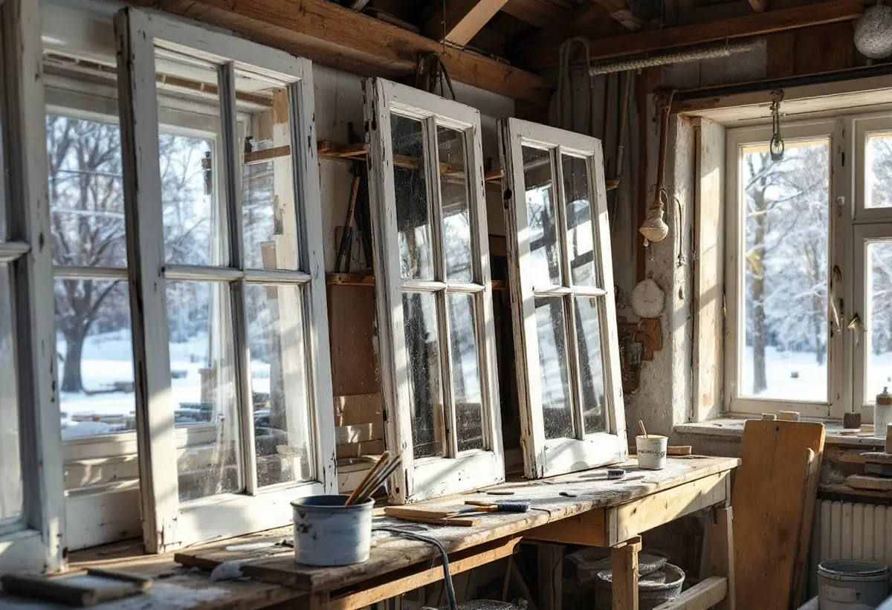

Platsbesök
Vi går runt villan och noterar fönstrens skick fasad för fasad.
Saltsjöbaden byggdes som badort och villastad på 1890-talet, och kommunens kulturmiljöprogram beskriver ett stort antal välbevarade villor från olika perioder. Geal Entreprenad AB renoverar fönster i Saltsjöbaden, Solsidan och resten av Nacka, med linoljefärg och linoljekitt, och lägger upp arbetet efter väder och väderstreck.
Nacka kommuns kulturmiljöprogram Villasamhällen vid järnvägen berättar att bankmannen Knut A Wallenberg köpte marken av egendomen Erstavik på 1880-talet för att anlägga en bad- och kurort av kontinental typ, med järnväg till Stockholm. Saltsjöbaden invigdes i början av 1890-talet. Redan 1896 hade ett 60-tal villor byggts, och i början av 1900-talet var alla 120 tomter på Neglingehalvön sålda. Typiskt för den tidiga bebyggelsen är stora tomter med påkostade villor i tidstypisk panelarkitektur.
Delar av Saltsjöbaden är riksintresse för kulturmiljövården, och programmet skriver att här finns ett stort antal välbevarade villor som är känsliga för förändringar och där ett bevarande av befintliga tak, fasader och fönster eftersträvas. Samtidigt omfattas stora delar av området av äldre planer som ofta saknar närmare regleringar av kulturvärden. Där bedömer vi att det i praktiken är ägarens eget underhåll som avgör om de gamla fönstren finns kvar.

Riksantikvarieämbetets skrift om fönster jämför fönstrets påfrestningar med en båts: det står ständigt i regn och sol. Skriften rekommenderar linoljefärg både vid renovering och nymålning, eftersom den tränger in i virket och fäster mycket bra. Latexfärg lägger sig snarare som en film, skyddar sämre och har en tendens att klibba ihop, vilket är en nackdel på fönster. Ett fönster målas normalt med tre strykningar, grundning, mellanstrykning och slutstrykning, och färgen ska inte läggas på för tjockt.
Handboken Byggnadsmåleri med traditionella färgtyper påminner om att även ytterbågens insida ska strykas med utomhusfärg, och att fönsterkittet måste vara helt så att fukt inte tränger in och orsakar röta. Kittfalsar som blottas ska grundas innan de kittas, eftersom grundningen hindrar kittet från att torka ut och spricka och gör att det fäster bättre.
Enligt Riksantikvarieämbetet är maj till augusti den bästa perioden för fönstermålning, och direkt solsken bör undvikas eftersom färgen då kan torka för fort och slå blåsor. Fukthalten i träet får inte vara högre än cirka 15 procent och ska kontrolleras när man målar. Framför allt sydfasader är utsatta. Målas fönstrets nedre del ungefär vart femte år kan färgen på övriga delar klara sig 10–15 år.
På en villa med fönster åt alla håll lägger vi därför upp arbetet efter väderstreck, med söderfönstren först och bara bättring där färgen fortfarande sitter bra. Bågarna kan också tas ned och målas på verkstad, vilket enligt skriften gör det möjligt att arbeta även vintertid och ger ett jämnare resultat. Fönsterhålen täcks då med skivor medan bågarna är borta.
Boverkets energiguide beskriver flera sätt att förbättra ett befintligt fönster: täta det, byta den inre rutan till energiglas, sätta en tvåglaskassett på insidan eller komplettera med en separat extra båge. Vad som går beror på om bågen klarar tyngden och om det finns djup nog. Har huset kvar rutor av munblåst eller valsat glas kan de enligt Boverket kanske användas som ytterrutor och ersätta sådana som gått förlorade, så att husets ursprungliga utseende behålls.
Är fönstren i dåligt skick kan ett byte enligt energiguiden bedömas som mer lönsamt, eftersom alternativkostnaden för att renovera dem då är hög. Hur kommunens karta och detaljplaner påverkar ett byte beskriver vi under fönsterbyte i Nacka, och mer om nya fönster finns på sidan om fönsterbyte. Behöver fasaden lagas runt fönstren, se fasadrenovering i Nacka.
Vi går runt villan och noterar fönstrens skick fasad för fasad.
Söderfönster och de mest slitna bågarna kommer först.
Målning på plats eller på verkstad, kittning och eventuell innerbåge med energiglas.
Bågarna tvättas, löst kitt och färg tas bort och renskrapat trä halvoljas.
Linoljefärg i tunna lager, även på ytterbågens insida.
Bågarna hängs tillbaka och justeras så att de går lätt.
Skatteverket räknar reparation och målning av fönster på ett småhus som rotarbete. Målas eller glasas bågarna på verkstad är det bra att veta att bara arbetad tid på plats hos dig ger rätt till rotavdrag, och att glasarbeten utanför bostaden, till exempel i företagets egna lokaler, uttryckligen inte ger avdrag. Det som görs på verkstaden redovisar vi därför för sig på fakturan, utan avdrag.
Avdraget är 30 procent av arbetskostnaden, högst 50 000 kr per person och år och högst 75 000 kr tillsammans med rutavdrag. Färg, kitt och resor ger inget avdrag.
Antalet bågar och hur högt de sitter, om de målas på plats eller på verkstad, hur mycket gammal färg som ska bort och om innerbågarna ska få energiglas påverkar kostnaden mest. Efter ett kostnadsfritt besök får du ett skriftligt kostnadsförslag.
Byta eller renovera fönster.
Fönsterbyte i Stockholm →Takbyte, takbesiktning och plåtarbeten.
Takläggare i Nacka →Saltsjöbaden, Boo och Älta.
Takrenovering i Nacka →Saltsjöbanan, kommunens mark och kulturkartan.
Attefallshus i Nacka →VA, LTA och dagvatten på tomten.
Byggföretag i Nacka →Uthus, räcken och plåt kring villan.
Fasadmålning i Nacka →Villasamhällena vid Saltsjöbanan.
Fönsterbyte i Nacka →Villastäder, sommarhus och radhus.
Badrumsrenovering i Nacka →Sommarvillor, stugor och villor i Nacka.
Fasadrenovering i Nacka →Sommarvillor, stugor och hus med källarplan.
Golvläggare i Nacka →Slipa och olja trägolvet.
Golvslipning i Nacka →Radhuskök, sekelskiftesvillor och vedspis.
Köksrenovering i Nacka →Panelvillor och sommarnöjen i Nacka.
Målare i Nacka →Farledens plåttak och Saltsjöbadens villor.
Plåtslagare i Nacka →Verandor, panel och altaner.
Snickare i Nacka →Skorsten, huvar och genomföringar vid nytt tak.
Takbyte i Nacka →Ny tapet och dold dekor i äldre villor.
Tapetsering i Nacka →Strandskydd och villasamhällen.
Tillbyggnad i Nacka →Nytt värmesystem när huset ändå görs om.
Totalrenovering i Nacka →